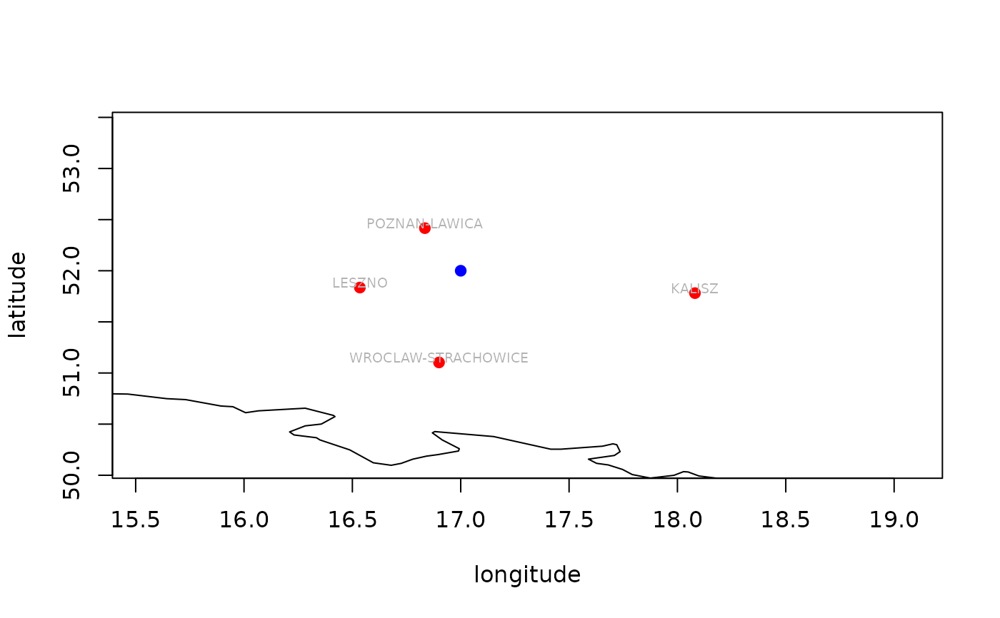

R/nearest_stations_imgw.R
nearest_stations_imgw.RdReturns a data frame of meteorological or hydrological stations with their coordinates in particular year.
The returned object is valid only for a given year and type of stations (e.g. "synop", "climate" or "precip"). If add_map = TRUE additional map of downloaded data is added.
nearest_stations_imgw(
type = "meteo",
rank = "synop",
year = 2018,
add_map = TRUE,
point = NULL,
no_of_stations = 50,
allow_failure = TRUE,
...
)data name; "meteo" (default), "hydro"
rank of the stations: "synop" (default), "climate", or "precip"; Only valid if type = "meteo"
select year for searching nearest station
logical - whether to draw a map for a returned data frame (requires maps/mapdata packages)
a vector of two coordinates (longitude, latitude) for a point we want to find nearest stations to (e.g. c(15, 53)); If not provided calculated as a mean longitude and latitude for the entire dataset
how many nearest stations will be returned from the given geographical coordinates. 50 used by default
logical - whether to proceed or stop on failure. By default set to TRUE (i.e. don't stop on error). For debugging purposes change to FALSE
extra arguments to be provided to the graphics::plot() function (only if add_map = TRUE)
A data.frame with a list of nearest stations. Each row represents metadata for station which collected measurements in a given year. Particular columns contain stations metadata (e.g. station ID, geographical coordinates, official name, distance in kilometers from a given coordinates).
# \donttest{
df = nearest_stations_imgw(type = "meteo",
rank = "synop",
year = 2018,
point = c(17, 52),
add_map = TRUE,
no_of_stations = 4)
#> Your system locale is: C.UTF-8 which may cause trouble.
#> Please consider changing it manually while working with climate, e.g.:
#> Sys.setlocale(category = 'LC_ALL', locale = 'en_US.UTF-8')
#> https://danepubliczne.imgw.pl/data/dane_pomiarowo_obserwacyjne/dane_meteorologiczne/miesieczne/synop/s_m_d_format.txt
#> https://danepubliczne.imgw.pl/data/dane_pomiarowo_obserwacyjne/dane_meteorologiczne/miesieczne/synop/s_m_t_format.txt
#> https://danepubliczne.imgw.pl/data/dane_pomiarowo_obserwacyjne/dane_meteorologiczne/miesieczne/synop/
#> https://danepubliczne.imgw.pl/data/dane_pomiarowo_obserwacyjne/dane_meteorologiczne/miesieczne/synop/2018/2018_m_s.zip

# }